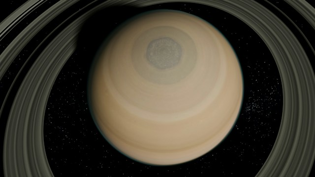
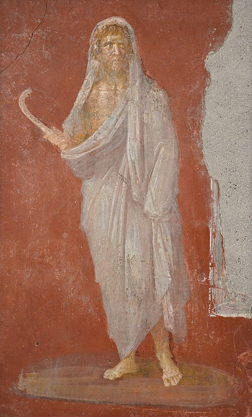
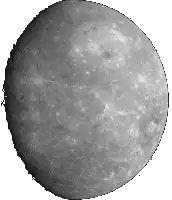
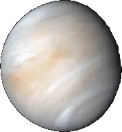
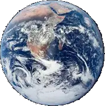
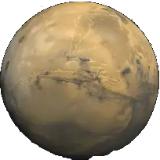
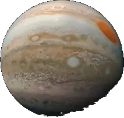
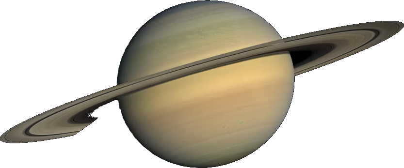
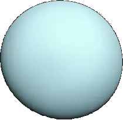
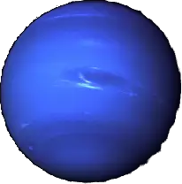

Titan
Saturns largest moon, Titan has a thick atmosphere and lakes of liquid methane. It is larger than the planet Mercury.
A giant of ice-cold rings and fascinatong moons. Discover the sixth planet from the Sun!
From tiny icy worlds to mighty Titan, Saturn's moons come in many shapes and sizes. Explore five of the largest.
Galileo Galilei observes Saturn through a telescope for the first time.
Giovanni Domenico Cassini discovers that Saturn's ring is not solid, but comprised of several smaller rings with gaps between them.
The Cassini–Huygens space probe enters orbit around Saturn, collecting observations until burning up in Saturn's atmosphere in 2017.
Several ancient civilizations are known to have observed the movements of Saturn, including the Babylonians
As telescopes get more advanced, dutch astronomer Christiaan Huygens discovers the ring of Saturn, along with the moon Titan.
Pioneer 11 is the first spacecraft to capture close-up images of Saturn, followed by Voyager 1 and 2 in 1980 and 81 respectively.

Saturn was the roman god of time, agriculture and dissulotion, among other things. He was also the father of several important gods of the roman pantheon, including Jupiter, king of the gods.
As with his greek equivalent, Chronus, he was overthrown by his son. Unlike Chronus, however, he was not eternally imprisoned, but instead arrived in Italy bringing civilization and agriculture, eventually leading to a golden age.
In modern times, his most famous depiction is likely the painting 'Saturn devouring his son' by Fransisco Goya


Mercury

Venus

Earth

Mars

Jupiter

Saturn

Uranus

Neptune